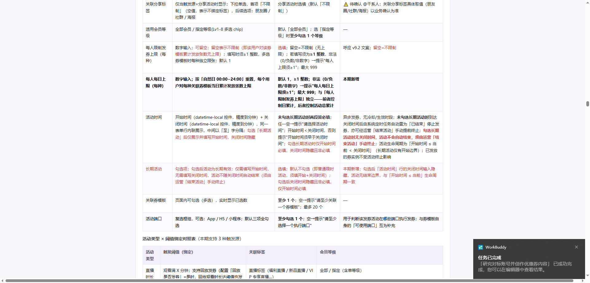
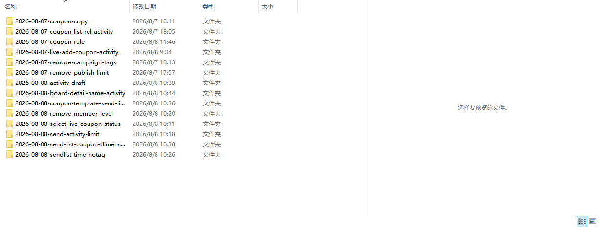
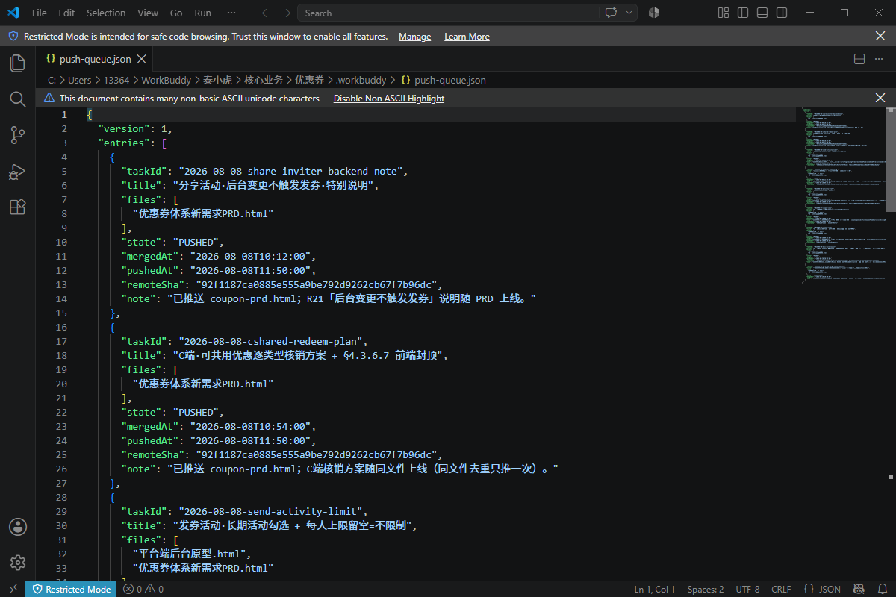

事情是这样的。
周五下午，项目群又炸了。两个人前后脚改了同一个优惠券字段，一个人的红字，把另一个人的改动整块盖掉了。我当时就愣在屏幕前，这已经是这个月第三次了。
说出来有点丢人，但这就是真实的样子。我是个产品经理，手头管着一套优惠券系统。这阵子，研发部甩过来一份需求文档，二十多条需求，密密麻麻。每一个都要落到 PRD 里，每一个都得在原型上对上。那不是一份文档，是一堆永远合不拢的活儿。
这活儿最反人类的地方不是难，是绵。从七月中到八月初，断断续续改了三周多。注意，不是改一天歇两天，是几乎每天都在改，大改小改连着来，周末也改。有那么几次，我一个人对着文档改到晚上十点多，最晚的一次快十二点，屋里就一盏台灯亮着，人已经瘫了，脑子里只剩一个念头：这回周一能准时上。结果周一刚上班，群就炸了，错却在线上跑着。那种台灯还亮着、人已经瘫了、错却在线上跑着的画面，发生一次你就再也忘不掉。
我后来算过，那三周里，真正坐班的时间之外，我大概搭进去七八个深夜和四个周末。不是自愿加班那种，是改到一半发现不对，回头还得接着改。你问我值不值，我当时没空想这个，只想赶紧合完。
我这人记性不好，但有些数字记得特别清楚。
那段时间，需求不是一条一条来的，是七八条、十来条一起涌。每一条我都得单独开个隔离草稿，改完再合回主文件。我的 tasks 目录里，最多的时候躺着八九个并行的草稿，从 R5 到 R17，每一个都在等合。主 PRD 的版本号，从 V2.0 一路爬到 V2.2.1，光这一个 HTML 文件，会话里存了二十多个备份版本。你没看错，二十多个。我后来翻备份的时候自己都笑了，这哪是版本管理，这是恐慌性存档。每一版都怕丢，每一版都舍不得删。
这种并行地狱的代价是，你永远不知道别人动没动你那块。八九个草稿同时在飞，谁改了哪个字段，全靠记忆和人肉对齐。等到要合的时候，才发现卧槽，这块有人动过。
转 Word 那关，才是真的折磨。
PRD 是 HTML 写的，要发给研发、要进钉钉，得转成 Word。第一次转，图全飞了。五十多张图，本地五十来张，加三张线上的，脚本只认本地相对路径，把 http 和 base64 的全丢了。打开文档那一刻，满屏空白框，像被洗过一遍。改脚本，重转，再对，又发现格式歪了。表格错位、缩进乱跳、标题层级全平了。来来回回，转了不知道几遍，每次都以为这回稳了，打开还是一摊。我记得有天晚上就是为了这破 Word，从十点折腾到快十二点，最后发出去之前又偷偷截了图对了一遍，生怕哪张又飞了。
说真的，转 Word 这件事，消耗的精力比写需求本身还多。它不是一次性失败，是反复失败，每次给你一点希望，再打你一巴掌。
C 端原型更惨。从最早的 v1.0 交互版，一路重画到现在的 v1.9，中间至少有四五版。每一版都不是小修，是推了重来。交互逻辑不对、字段摆位不对、和 PRD 对不上，就得重画。截图也是，七月底那批十五六张，后来发现不行，得重截，光替换就换了三张，剩下的到现在还晾在那，没动。
最气的是，有时候不是我画错，是 AI 照着参考图画，画出来的东西和原版差了点意思，肉眼能看出来不对，但说不清哪儿不对，就卡在那儿反复磨。那种感觉，就像你让工人照图纸盖房，他盖完了你说不对，他说图纸就这样，你俩对着图纸吵了半小时，最后发现是他把二层画成一层的。
这些都不是最崩的。最崩的是有一次，我图省事，直接让 AI 把改动写进主文件，改完我瞄一眼就推了。幺蛾子一下炸三个。
红字残留。上次的标记没清，新需求被当成历史改动，混在一起分不清哪是新哪是旧。互相覆盖。两个人并行改，后合的把前面的全盖了，前一个人的活儿白干。推送失败。源头一旦错了，错的就上线了，连撤回都来不及，因为已经推到生产了。
我那时候才反应过来。我以为 AI 会像我想的那样，懂边界、懂轻重、懂哪块能动哪块不能动。其实不是，它只是很乖地，照做。你说往东它不往西，但你要是没说清楚东边哪栋楼，它就给你随便进一栋。
痛定思痛，第一改，我把改和正式隔开。
每次来个需求，我不开主文件，先开一个隔离草稿，在本地改，不碰正式那份。然后定了一条红黑规则，红字是这次新改的，黑字是原样没动的。一眼扫过去，你就能看出这次动了哪。这招，就是为了那八九个并行草稿不再互相踩。以前是八个人在同一块地里刨，现在是每人一小块自留地，刨完再拼。
但另一个坑马上来。痛点很直白，别人在你不知情时改了同一块，等你合的时候才发现，卧槽这块有人动过。我自己就栽过，让 AI 改 A 处，它跑去改了 B 处，位置都找错了，全得重来。P2 和 P4 搞反过，字段填错地方过，那种低级错，AI 犯起来比人还理直气壮。所以每次动手前，我先写一份范围声明，说清这次动 PRD 的哪一章、原型的哪个视图，串行合的时候去查重叠。
这里有一条我死守的红线。一发现冲突，找人确认，绝不沉默处置。AI 不替你做谁覆盖谁的决定，这个必须人来拍。因为一旦 AI 替你悄悄定了，后面全是雷。这条红线，是我用那次红字盖红字的事故换来的，我到现在都不敢碰。
本地稳了，发布又出问题。合并和发布是耦合的，一合就推，错了连后悔都没机会。所以我把它拆开，单独弄个负责推送的角色，队列驱动，本地先攒着，最后一次性按顺序发。发完回读线上，确认红字等于零，这趟才算完。转 Word 那摊事，也顺带治了，因为源头干净了，转出来才不歪。我后来发现，很多转 Word 的破事，根子不在转，在源头的 HTML 里混了太多临时标记和乱七八糟的占位，源头一干净，下游全顺了。
功能到这儿都齐了。我一度以为，齐活了。
然后上了一课，最贵的一课。
这一课不堆功能，讲的是姿态，AI 到底该站哪边。我加了一道产品原则预审。但我和自己约法三章，这道预审，AI 只做排查。它读需求，把觉得不对劲的，比如这个字段可能多余、这个异常没覆盖、这个场景值不值得做，列成清单报给我。我拍板了，结论才进 PRD。AI 绝不自己加戏写进去。
我吃过亏的。有次 AI 自作主张，把一个我觉得没必要的字段补得很完整，还写了套校验逻辑，看起来特别专业。结果评审的时候被研发一句话问住：这字段谁要用？我说不上来，因为不是我要的，是 AI 自己加的。那次之后我就定了，AI 可以怀疑，可以提问，可以列清单，但笔必须握在人手里。
提问也是，能自己查的先查，剩下的按依赖，一次只问一个，不把人当表单填。以前我习惯一股脑抛七八个问题，对方回一句就崩。后来改成，先把能查到的查了，查不到的排个序，先问最堵的那个，问完再问下一个。效率高得离谱，对方也不烦。
为什么这条最重要。因为 AI 很会假装听懂。你以为它懂了，其实它只是把你的话复述一遍，还复述得倍儿顺。人得守住决策权，这是底线。这条，和前面那个永不沉默处置，是一脉相承。凡是出问题、有分歧、有不确定，找人，别让机器替你沉默地做了主。
到这儿，这套东西才算真正立住。
现在的样子，是我做了几个专门的 Skill，加上几个通用的，凑成一套能跑的体系。一个需求进来，拆需求 Skill 开隔离草稿，合并 Skill 跑检测，推送 Skill 消费队列发出去。一轮一轮走过去，越走越顺。那二十多条需求，从满地草稿，到一条条干净地合进去，中间红过、黑过、盖过、重画过，最后都落位了。

【后台请在此位置插入图3① 红黑规则】① 红黑规则：PRD 红色标注本次新增/修改，黑色是原有内容（文件：images/fig3a-red-black-rules.png）
① 红黑规则：PRD 里红色标注的是「本次新增/修改」，黑色是原有内容
【后台请在此位置插入图3② 隔离草稿目录】② 隔离草稿目录：tasks 下 14 个并行草稿（8/7 ~ 8/10）（文件：images/fig3b-tasks-directory.png）
② 隔离草稿：tasks 目录下躺着 14 个并行草稿（8/7 ~ 8/10），每个一个独立需求
【后台请在此位置插入图3③ 推送队列】③ 推送队列：push-queue.json 记录每条任务状态（PUSHED=已上线）（文件：images/fig3c-push-queue.png）
③ 推送队列：push-queue.json 记录每条任务的状态（PUSHED = 已上线）我后来越想越觉得，设计 Skill 和设计产品，真没本质区别。都得定红线、划边界、画状态机、想异常。你给 AI 写的那个流程，和你给研发写的那个 PRD，底层是一回事：把模糊的意图，变成确定的、可执行的、出错能兜住的规矩。别再说什么 AI 会不会取代产品经理了，先想想你有没有把流程设计清楚。流程不清楚，AI 再强也是个乱出拳的壮汉。
回到开头那个周五的群消息。现在它还会响吗。会。但响的时候，我知道去哪看，谁在改，该找谁确认。那个深夜十一点合完、周一又炸的画面，没再出现过。不是因为 AI 变聪明了，是因为我把规矩立住了。
以上是我不成熟的经验，不一定对，但确实是踩出来的。如果你也在管那种会并行改的文档，先别急着上 AI，先把三件事想清楚，隔离、红线，还有谁拍板。AI 不替你做决定，但它能让你做决定的时候，手里全是干净的信息。
最后说句掏心窝的。这三周，二十多个版本，五十多张图飞了又转，原型重画四五版，深夜和周末搭进去多少我自己都数不清。如果早一点把这事儿想明白，我至少能少熬三四个夜。写这篇不是为了显得我多厉害，是想告诉同样在泥里刨的人，坑是可以绕的，只是得有人先踩过、再指给你看。
觉得有用，点个 「在看」 让更多人看到。要是真帮到你了，赞赏 我一杯咖啡也行 ☕
一个在泥里刨过、想把坑指给你看的产品经理